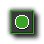

Draw Actions
The draw actions are actions which draw things to the screen.
The following actions are all related to the act of drawing things to the screen. As such, most of them can only be used in the draw event of an object, and even then they will not be performed if the object has been flagged
as invisible through code or through the object properties "visible" setting being un-checked.
Drawing
Draw Self
When you add any type of action or code to the draw event of an object, you are telling GameMaker:Studio that you are taking over the draw event and that you will tell it what to draw from now on. This means
that any assigned sprite will no longer be drawn unless you explicitlt say so, which when you would use this action. This simply draws the assigned sprite for the object with any transforms that may have been set in previous
events (like scaling, blending or changes in alpha) at the current sub-image.
Draw Sprite
This will draw a sprite somewhere in the room. You specify the sprite, the position (either absolute or relative to the current instance position) and the subimage of the sprite (The subimages are numbered from 0 upwards).
If you have an animated sprite and you want it to draw the subimages as normal, use number -1. This action will not draw the sprite transformed, even if you have changed the image blend or scale.
Draw Background
This will draw a background resource somewhere within the room. You indicate the background image, the position (absolute or relative) and whether the image should be tiled all over the room or not.
Draw Text
With this action you can draw text anywhere in the room. You specify the text and the position to draw, but please note that there are certain conventions to follow when drawing text :
- A # symbol in the text is interpreted as going to a new line, so typing this - Hello world!#Nice day - would draw the text over two lines.
- If you need to draw the # symbol itself, use \# ie - this is foobar \#3.
- You can mix text and expressions to draw values of variables. The text you want to draw must be in quotes (either ' or ") and the variable to draw must use the string() function. For example, if you wish to draw the value of the in-built object variable direction, you would have this - 'Current Direction = ' + string(direction)
Draw Scaled Text
This action is similar to the previous action but this time you can also specify a horizontal and vertical scaling factor to change the size of the text and you can also specify an angle to rotate it.
Draw Rectangle
You specify the coordinates of the two opposite corners of the rectangle, either absolute or relative to the current instance position, and you can tell GameMaker:Studio to draw either a solid filled rectangle, or
just the outline. The color of the rectangle depends on the currently selected draw color (see the Set Color action below).
Horizontal Gradient
This action also draws a rectangle but this time using a color gradient that changes from left to right. You can specify the size and position of the rectangle, either absolute or relative to the current instance position, and
the two colors to use in the gradient.
Vertical Gradient
This action also draws a rectangle but this time using a color gradient that changes from top to bottom. You can specify the size and position of the rectangle, either absolute or relative to the current instance position, and
the two colors to use in the gradient.
 Draw Ellipse
With this action you can draw an ellipse. You specify the coordinates of the two opposite corners of the rectangle that would border the ellipse, either absolute or relative to the current instance position, and you can
tell GameMaker:Studio to draw either a solid filled ellipse, or just the outline. The color of the ellipse depends on the currently selected draw color (see the Set Color action below).
Gradient Ellipse
As above, you draw an ellipse, but this time you can select a gradient of two colors to fill it from the center out to the border.
Draw Line
This simply draws a line between the two points that you specify in the action, either absolute or relative to the current instance position. The color of the line depends on the currently selected draw color
(see the Set Color action below).
Draw Arrow
With this action you can draw a simple arrow. Much like the Draw Line action, you specify the coordinates of the two endpoints of the arrow, either absolute or relative to the current instance position,
and the size of the arrow tip. The size is in pixels and is measured backwards from the end of the line, so that the point of the arrow adds nothing to the overall length. The color of the line depends on the currently
selected draw color (see the Set Color action below).
Settings
The following actions do not need to be called from the draw event, and are usually only called once in a specific event (like the create event or a mouse event) due to the fact that they only
need to set their action once in a game.
Set Color
Lets you set the color used for drawing shapes, lines, and text. This does not influence in any way sprites and backgrounds are drawn.
Set Font
You can set the font that is from this moment on used for drawing text, but this must be one of the font resources you have defined previously in the resource tree. If you choose No Font a default 12 point Arial font is used.
Set Full Screen
With this action you can change the screen mode from windowed to fullscreen and back. You can indicate whether to toggle the mode or whether to go to windowed or fullscreen mode, making it an ideal action for use in any
kind of options menu for your game.
Other
The following actions do not need to be called from the draw event.
Take Snapshot
With this action you can take a snapshot image of the game while it is being played and store it in a .png file, the name of which you specify in the action.
Create Effect
With this action you can create all sorts of basic effects in a very simple way. You specify the type of effect, e.g. an explosion or smoke, its position, its size and its color and whether it should be shown below the objects
(at a depth of 100000) or on top of them (at a depth of -100000). The rest is done automatically for you by the in-built GameMaker:Studio particle system (for more information on particles see -
Extra Actions and Reference : Particles). Note that for rain and snow
the position is irrelevant as it always falls down from the top of the screen and that to get continuous rain you should create it in each step.